News
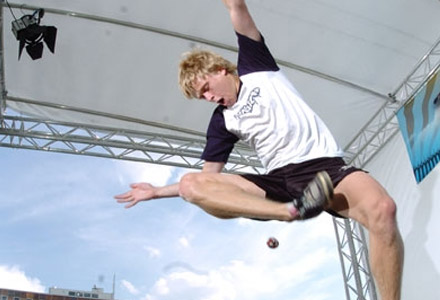IFPA World Footbag Championships
29th IFPA World Footbag Championships takes once again place in the wonderful heart of Europe in the city of thousand towers � Prague. This annual gathering brings together our big footbag family from all around the globe for a week of fun, sport and unforgettable memories that last forever.
More than 220 competitors were caught away by Prague�s first Worlds in 2003 on the Slavia Stadium. After 5 years we are proud to host at least as many of you as on that historical year when Europe got stroked by a wave of footbag fever. We will do your best to make this event another historical moment in our beloved sport.
Once again we have chosen a venue that will host Net and Freestyle events together on one field. Additionally we will have European Freestyle Frisbee Championships joining our finals day show on Saturday.
Net players will have the best possible grass field in the whole Prague and Freestylers will compete in an arena like structure on tartan surface. Catering and chill-out zone is ready for everyone directly on the playground. We believe we chose wisely and that all participants will have a great time. Lets Rock and Roll!
Updates
Late check-in and registration infoLate registration and check-in will run on Sunday, August 10th, at Slavia Athletic Stadium (the event site) from 11am (11.00) to 10pm (22.00).
This is the time when you can arrive, pay your fees if necessary, and get your player's pack. This is the ONLY chance for you to check in if you did not pre-pay by August 7th!! Only "guests" (not competing) or pre-paid players will be able to pick up player's packs after this time.
for more info about check-in and registration check this page
Net schedule updatedCheck the latest footbag net schedule
Important updateHostel capacity of 120 beds have been used so you dont need to mail them anymore. We recomend that you contact other hostels in Prague for cheap accomodation. Please visit the accomodation page to see which we recomend.
Registration now openedOfficial registration just launched! See more on registration page on footbag.org!
Video
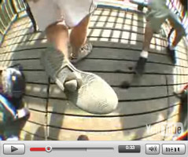Photo
worlds 2003 finals| 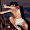 | 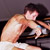 |
worlds 2003 doubles finals
| 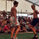 | 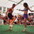 | 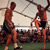 |
worlds 2003 net finals
| 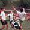 | 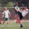 | 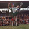 |
worlds 2008 models!
| 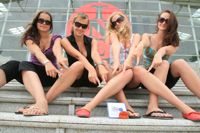 |